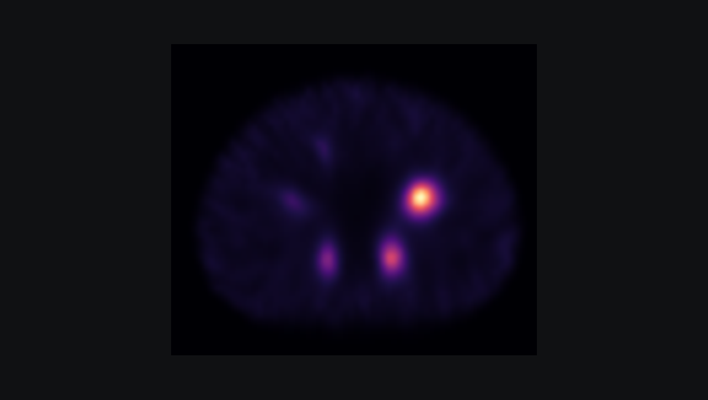

Ongoing doctoral research
Quantitative SPECT Reconstruction
Developing computational approaches that connect emission measurements with reliable images of radiotracer activity. The emphasis is on image quality, physical fidelity, and practical computation.